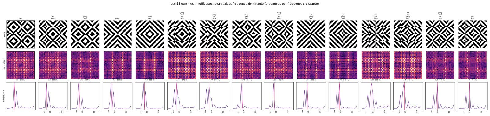
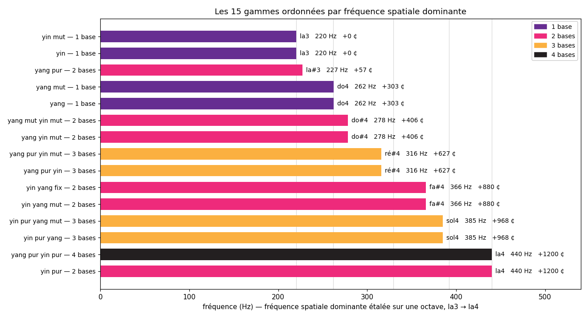

Other languages: Français
Cymatics: what the spectrum of a pattern reveals
By Anibal Edelberto Amiot — Published September 16, 2026 · translated from the French
“A resemblance is not a cause. It is an invitation to look for why it appears.”
The sand and the plate
In 1787, Ernst Chladni published a small book on the figures he obtained by sprinkling sand on a metal plate and rubbing its edge with a bow. The sand flees the areas that vibrate and gathers on those that stay still — the nodal lines. Each pitch produces its own figure, and the figure changes when the pitch changes.
The experiment has come down the centuries for a simple reason: it makes visible something that was not. Sound, which has no shape, draws a shape. And this translation is stable, reproducible, independent of whoever is looking.
It is this last point that matters. The sand does not draw what we expect of it. It draws what the plate imposes.
What the plate imposes
A Chladni figure is not the shape of the sound. It is the shape of the plate when that sound passes through it. Change the thickness of the metal, the cut of its outline, the point of support, and the same note will give another figure. Replace the plate with water in a vessel, and the depth of the liquid, its surface tension, the diameter of the circle that holds it will enter into the result as much as the frequency.
The figure is born of an encounter. The sound brings a periodicity, the medium brings a geometry, and what appears belongs to both.
This precision has a consequence that is seldom spoken of. Cymatics, as it circulates today, often promises more — that sound creates form, that certain frequencies give rise to privileged figures, that matter obeys a hidden harmony. Physics does not say that. It says that precise boundary conditions, excited at a given frequency, select certain eigenmodes. That is already remarkable. It is not a metaphysics.
A constructed correspondence
The Cymatics page of this site claims nothing of the kind, and that is what sets it apart.
What it does: it listens, it estimates the dominant frequency of what it hears, and it displays the tiling whose spatial frequency comes closest to it. The fifteen scales of the treatise are ranked by the density of their weave — how many times the pattern repeats as it crosses the square. The page offers two ways of spreading this density across frequencies: over several octaves, in exact proportion to the square of the density, or brought back to a single octave, for immediate comparison.
The correspondence is therefore constructed. It rests on a decision: to associate a spatial periodicity with a temporal periodicity. Nothing in nature imposes this association. That does not make it false — it is conventional, in the sense that a tuning fork is conventional. No one reproaches the A 440 for not being written into the order of the world.
But a convention can be applied to an arbitrary object or to a structured object, and that is not the same thing. The question deserved to be asked: what is there to measure, in these fifteen patterns, even before a note is assigned to them?
What the spectrum answers
The analysis is direct. Take each pattern, compute its two-dimensional spatial spectrum, and look at how the energy is distributed across frequencies. Three things appear, one of which no construction decision foresaw.
The spectra carry the symmetry of the axes, and they carry it the opposite way from what one might think. A Yang scale concentrates its energy on the horizontal and vertical axes — 77.8% for Yang and mutant Yang, and strictly zero on the diagonals. A Yin scale does exactly the opposite: 70.4% on the diagonals, nothing on the axes. The separation is total in both cases, and the analysis thus recovers the founding axis of each family without being told — the only input is the pattern's binary mask.
Measured on the four basic scales, by 2D Fourier transform of the grid of per-cell averages.
The scales come in pairs, and the pairs are spectral twins. Yin and yin mut, yang and yang mut, yin pur yang and yin pur yang mut: each time, two visually distinct images but with the same dominant frequency. Mutation shifts the drawing; it does not change its frequency content. Across the fifteen scales, these pairs leave only nine distinct pitches — three patterns, yang pur, yin pur and yang pur yin pur, remain without a twin: each already combines the two states of one and the same axis, so there is nothing in it to mutate.
The energy curves are peaked, not spread out. Each scale has a clearly dominant spatial frequency. This was not a given: an arbitrary pattern produces a diffuse spectrum, in which no frequency prevails. One may say, with the caution that the analogy requires, that each scale has something like an eigenmode — with the difference that a plate's eigenmode comes from physical boundary conditions, whereas this one comes from the pattern's rule of construction.

Nine values, in pairs
It is by looking more closely at these nine pitches that the analysis stops being a mere check — and that an earlier version of this page went wrong, on a point that must be corrected here without disguising it.
The measured spatial frequencies, as squares of integer frequency indices (k² = fx² + fy², where (fx, fy) is the dominant peak of the 2D spectrum), are: 1 · 2 · 4 · 5 · 8 · 9 · 10 · 13 · 20.
| Scale(s) | k² |
|---|---|
| yang mut, yang | 1 |
| yin mut, yin | 2 |
| yang pur | 4 |
| yin yang fix, yin yang mut | 5 |
| yin pur | 8 |
| yang mut yin mut, yang yin mut | 9 |
| yang pur yin mut, yang pur yin | 10 |
| yin pur yang mut, yin pur yang | 13 |
| yang pur yin pur | 20 |
Whole numbers, all of them — but there is nothing remarkable in that, and an earlier version of this page presented this whole-number character as a discovery, likening it to the vibration modes of a square plate (f proportional to √(m² + n²)). The comparison was misleading: fx and fy are bin indices of a discrete Fourier transform, whole numbers by construction, whatever the grid analysed. k² = fx² + fy² is therefore automatically a whole number, always, for any pattern — it is not a property of the fifteen scales, it is a property of the measurement itself. Nothing to do with the nodal lines of a Chladni plate.
What really is a property of the fifteen scales, on the other hand, is how they are distributed over these nine values: twelve scales group into six pairs of equal k², and in each pair the two members differ only by the mutant state of one axis. The three remaining scales — yang pur, yin pur, yang pur yin pur — already combine the two states of one and the same axis and therefore have no twin: there is nothing in them to mutate.
An earlier version of this page gave a ratio of √2 between the extreme frequencies, and saw in it the ratio of the square to its diagonal. That ratio does not exist in the measured values: they span a factor of twenty, that is, four octaves and a third. The announced ratio came from values that did not describe the patterns.
A point of caution, which holds for everything above. The frequency anchor chosen by the Cymatics page — C 128 Hz, whatever scale is then chosen, proportional or ordinal — is an arbitrary decision, not a property of the system. What belongs to the system are the nine values themselves, whole numbers by construction of the measurement, and their distribution into six pairs plus three singletons.
What the nomenclature says, and does not say
The nomenclature of the fifteen scales — Yin and Yang, pure and mutant, combined by one, two, three or four bases — was established to describe combinations in a binary language. It comes from the Yi King and the logic of the lines, not from acoustics. It was never designed to predict anything about a frequency.

On one point, however, it meets the measurement exactly. Mutation, which in the vocabulary changes not the nature of a line but its state, does not change the frequency either: that is what every spectrally twin pair says, without exception. The vocabulary was therefore right to treat mutation as a variation of state rather than of nature.
On a second point, the correspondence does not merely exist: it is exact, and an earlier version of this page wrongly presented it as loose — on values that, already, did not describe the patterns.
What organises pitch is indeed the number of axes combined. The one-base scales occupy the values 1 and 2, the two-base ones 4, 5, 8 and 9, the three-base ones 10 and 13, and the scale that brings all four bases together stands alone at the top, at 20. The density of the weave grows with the number of axes, without anyone asking it to. And the scales come in pairs of equal value: in each pair, the two members differ only by the mutant state of one axis. Mutation shifts the drawing; it does not change its frequency content.
This is where the comparison with a musical scale remains apt, but otherwise than one would expect. A scale names intervals, and these names cover precise geometric ratios: when one says “fifth”, one says three to two. The nomenclature of the fifteen scales also covers a structure — but a structure of symmetries, not of numbers. And it is this structure, not the vocabulary that designates it, that is found again in the measurements.
Why sound and weave can be brought together
There remains the underlying reason, and it is mathematical rather than mystical.
The ear breaks a sound down into frequencies. The eye, faced with a repeated pattern, perceives a periodicity, a cadence of space. Both operations belong to the same family of tools — Fourier analysis, which treats a variation in time and a variation in space alike. A textile weave has a spatial frequency in the strict sense, measurable in cycles per unit of length, exactly as a sound has a frequency in cycles per second.
What passes from one domain to the other is not a substance. It is a structure. And weaving, which counts threads and repeats them, is perhaps the place where this structure shows itself best: a Jacquard loom literally performs a score, line after line.
What to expect from it
Try it. Whistle, sing, play a note. Watch the weave change; go up or down to see it transform.
If a resemblance strikes you at certain frequencies — if the pattern displayed recalls a figure you have already seen on a plate or in a bowl of water —, note it down. It will prove nothing, and it must not be asked to prove anything. But a resemblance that persists is the beginning of a question, and questions are worth more than borrowed certainties.
That is the only promise this page can honestly keep, and it is already a great deal: to show a correspondence acknowledged as such, backed by a measurable structure, rather than to believe in a correspondence disguised as a law.
Try the page → Open the Cymatics page.
This article was first published in French: Cymatique : ce que le spectre d'un motif laisse voir.